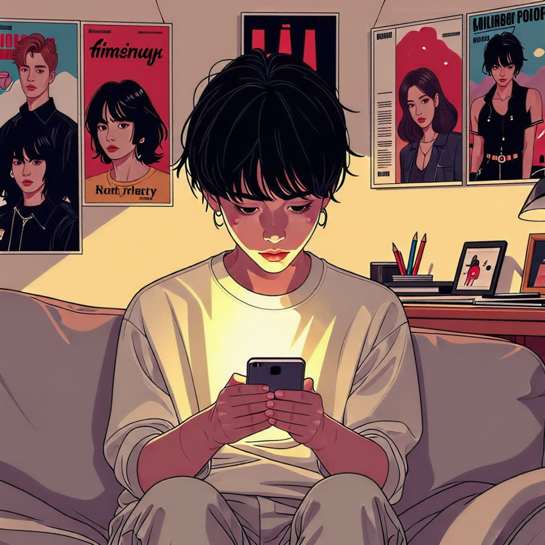

우리 아이, 스마트폰 중독? 부모가 알아야 할 필수 가이드!
안녕하세요, 생각공작소 입니다 :)
스마트폰이 현대 사회에서 없어선 안 될
매우 일상적인 도구로 자리 잡았습니다.
다양한 정보와 편리함 덕분에,
우리는 이 기기를 통해 많은 일들을 손쉽게 처리하고 있습니다.
그러나 불과 10년 전에는,
분명 스마트폰 없이도 문제를 잘 해결할 수 있었던 시절이 있었습니다.
하지만 지금은 스마트폰이 없다면 📵
일상생활이 불편해지는 경우가 많습니다.
이로 인해 주변에서 스마트폰이 없을 때
불안감을 느끼는 청소년들이 증가하고 있습니다.😣
스마트폰의 의존도가 점점 높아짐에 따라
이러한 상황에서 부모님들이 가장 고민하는 문제 중 하나는
바로 자녀의 인터넷 , 게임 중독 입니다.
오늘은 우리 아이들의 스마트폰 중독 현상에 대해 자세히 알아보고,
그로 인해 나타날 수 있는 증상과 문제를 살펴보며,
부모님들이 자녀의 스마트폰 사용을 어떻게 관리하고,
대처해야 할지에 대한 방법을 이야기해보겠습니다 :)
스마트폰 중독 진단
혹시 우리 아이가 '청소년 스마트폰 중독'인지 궁금하다면,
몇 가지 자가 진단 방법을 통해 확인해 볼 수 있습니다.
중독의 주요 증상
- 강박적인 인터넷 사용 : 인터넷 사용에 대한 강한 집착이 보일 때
- 학업 부담 증가 : 시험이나 과제로 인한 스트레스가 과도하게 느껴지고, 공부 시간을 잘 활용하지 못할 때
- 대인관계 형성의 어려움 : 가까운 관계를 잘 형성하지 못하고, 감정 조절이 힘들 때
- 현실과 가상의 혼동 : 인터넷과 현실을 구별하기 어려워하고, 가상 세계를 실제처럼 느낄 때
- 가족과의 갈등 : 컴퓨터 사용 시간에 대해 가족과 다툴 때
- 반항적인 행동 : 공격적인 언어나 행동을 보일 때
위와 같은 증상들이 나타난다면,
자녀가 '청소년 스마트폰 중독'일 가능성이 있습니다.

스마트폰 중독의 악순환
인터넷 중독은 단순히 재미를 느끼기 때문만이 아닙니다.
많은 경우, 현실에서의 스트레스나 불안감으로부터 도피하고자 하는 심리적 요인이 작용할 수 있습니다.
예를 들어, 가족 간의 의사소통 부족, 친구와의 관계에서의 어려움,
혹은 학업 성적 저하로 인한 열등감 등이 그 원인일 수 있습니다.
이러한 상황에서 인터넷은 일시적인 안도감을 제공하지만,
결국에는 악순환에 빠지게 됩니다.😣
스마트폰에 과도하게 의존하게 되면,
자녀는 점점 더 현실에서의 문제를 회피하게 됩니다.
이로 인해 대인관계가 소원해지고,
학업 성취도가 낮아지며, 우울감이나 불안감이 심화될 수 있습니다.
이러한 악순환은 결국
자녀의 전반적인 삶의 질을 떨어뜨리게 됩니다.
스마트폰 중독의 악순환
부모의 역할
부모님들은 자녀의 스마트폰 사용을 관리하고 대처하는 데
중요한 역할을 할 수 있습니다.
1. 소통의 장 마련하기
자녀와의 대화는 스마트폰 사용 문제를 해결하는 데 있어서 매우 중요한 첫 걸음입니다.
자녀가 스마트폰을 사용하는 배경과 그로 인해 느끼는 감정을
제대로 이해하기 위해서는 열린 마음으로 대화에 임해야 합니다.
자녀에게 스마트폰 사용이 어떤 상황에서 이루어지는지,
그리고, 그 사용이 아이들에게 어떤 감정을 유발하는지 물어보세요.
예를 들어, “최근에 어떤 어플을 자주 사용하니?” 또는 “그 어플을 사용할 때 기분이 어떠니?"
와 같은 질문을 통해 자연스러운 대화를 유도할 수 있습니다.
이 과정에서 자녀의 이야기를 경청하고, 아이들의 감정을 존중해 주는 것이 중요합니다.
자녀가 자신의 생각과 감정을 자유롭게 표현할 수 있는 안전한 공간을 제공함으로써,
부모와 자녀 간의 신뢰 관계를 더욱 강화할 수 있습니다.
이러한 소통을 통해 자녀가 스마트폰 사용에 대해 깊이 고민해보고,
스스로의 사용 습관을 돌아볼 수 있는 기회를 제공해 주세요. 😊
2. 사용 시간 설정하기
자녀와 함께 스마트폰 사용 시간을 정하고 규칙을 설정하는 것은
건강한 사용 습관을 형성하는 데 매우 중요합니다.
부모가 일방적으로 규칙을 정하는 대신,
자녀와의 협의를 통해 함께 규칙을 만들어가는 것이 효과적입니다.
먼저, 자녀와 대화를 통해 스마트폰 사용의 필요성과 그로 인한 영향을 논의해 보세요.
예를 들어, “학업 시간에는 스마트폰을 사용하지 않기로 하자” 또는
“가족과 함께하는 시간에는 스마트폰 사용을 자제하자”와 같은 구체적인 규칙을 제안할 수 있습니다.
이러한 규칙은 자녀 스스로 책임감을 느끼고,
스마트폰 사용에 대해 더 의식적으로 접근할 수 있도록 도와줍니다.
또한, 규칙을 설정한 후에는 사용 시간을 기록하거나 타이머를 설정하여
자녀가 자율적으로 시간을 관리할 수 있게 해주는 것도 좋은 방법입니다.
정기적으로 이러한 규칙을 점검하고, 필요에 따라 조정하는 과정도 중요합니다.
자녀가 규칙을 잘 지키고 있는지 확인하고, 아이들의 의견을 반영하여 규칙을 개선해 나가면,
더욱 긍정적인 결과를 얻을 수 있을 것입니다.
3. 대체 활동 제안하기
자녀가 스마트폰 대신 할 수 있는 다양한 활동을 제안하는 것은
스마트폰 사용 시간을 줄이는 데 효과적입니다.
자녀가 흥미를 느낄 수 있는 활동을 찾아 함께 참여하면서
자연스럽게 스마트폰에서 벗어날 수 있도록 유도해 보세요.
먼저, 운동은 신체 건강뿐만 아니라 정신 건강에도 긍정적인 영향을 미칩니다.
자녀와 함께 자전거를 타거나, 공원에서 산책을 하거나, 운동을 즐길 수 있는 팀 스포츠에 참여해 보세요.
이러한 활동은 자녀가 신선한 공기를 마시고, 스트레스를 해소하며,
친구들과의 소통을 증진하는 데 도움을 줄 수 있습니다.
또한, 독서는 스마트폰 사용을 줄이는 훌륭한 대안입니다.
자녀가 관심 있는 주제의 책이나 만화를 함께 읽으며, 독서에 대한 흥미를 유도해 보세요
독서 후에는 책에 대한 이야기를 나누며 대화를 나누는 것도 좋습니다.
마지막으로, 취미 활동을 통해 자녀의 창의력을 자극할 수 있습니다.
그림 그리기, 악기 연주, 요리, 공예 등 다양한 취미를 시도해 보세요.
자녀가 새로운 기술을 배우고 성취감을 느낄 수 있도록 격려해 주는 것이 중요합니다.
4. 전문가의 도움 받기
만약 자녀의 스마트폰 사용이 심각하다고 느껴진다면,
전문가의 상담을 받는 것이 매우 중요한 선택이 될 수 있습니다.
스마트폰 중독은 단순한 사용 습관을 넘어서, 자녀의 정서적,
사회적 발달에 부정적인 영향을 미칠 수 있습니다.
이럴 때는 전문가의 도움을 통해 보다 효과적으로 문제를 해결할 수 있습니다.
심리 상담이나 치료는 자녀가 자신의 감정을 이해하고 조절하는 데 큰 도움을 줄 수 있습니다.
전문가와의 상담을 통해 자녀는 자신이 겪고 있는 불안감이나 스트레스의 원인을 파악하고,
이를 건강하게 표현하는 방법을 배울 수 있습니다.
또한, 전문가들은 자녀의 상황에 맞는 맞춤형 접근법을 제시해 줄 수 있습니다.
예를 들어, 인지 행동 치료(CBT)와 같은 기법을 통해 자녀가 부정적인 생각을 긍정적으로 변화시키고,
스마트폰 사용을 조절하는 데 필요한 기술을 배울 수 있습니다.
부모님들도 상담 과정에 함께 참여하면, 자녀의 감정과 행동을 이해하는 데 큰 도움이 됩니다.
전문가와의 상담을 통해 부모와 자녀 간의 소통을 더욱 원활하게 하고,
문제 해결을 위한 협력적인 관계를 구축할 수 있습니다.
전문가의 도움을 받는 것은 결코 부끄러운 일이 아닙니다.
오히려 자녀의 건강한 성장과 발달을 위한 중요한 단계임을 인식하고,
적극적으로 도움을 요청하는 것이 필요합니다.
스마트폰 중독은 단순한 사용 문제를 넘어서,
자녀의 삶에 큰 영향을 미칠 수 있는 심각한 문제입니다.
부모님들의 관심과 이해가 필요하며, 자녀와 함께 문제를 해결해 나가는 과정이 중요합니다.
자녀의 건강한 스마트폰 사용을 위해 오늘부터 작은 변화들을 시작해 보세요.
인천시 남동구, 연수구, 미추홀구, 서구 에 위치한 #심리상담센터 로
전연령층과 전직종을 대상으로 #심리상담 을 도와주는 곳입니다. :)
평생을 미술치료와 심리상담에 종사하신 소장님과
실력과 경험 많은 상담사들이 당신을 기다리고 있습니다.
더욱 자세한 정보는 문의를 통해 확인해주세요 :)
T. 032-277-2007